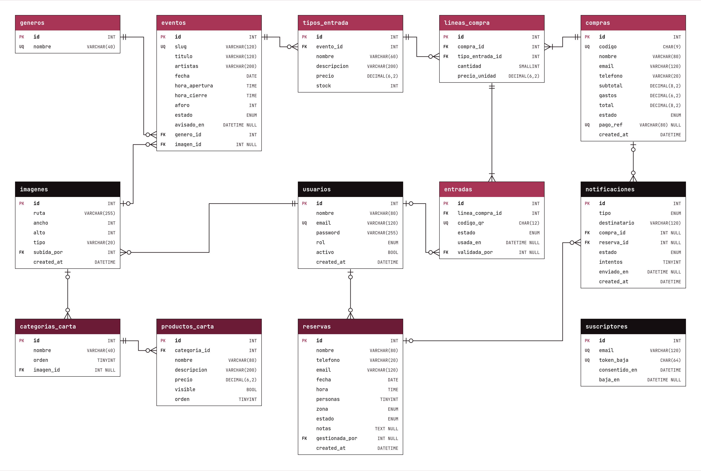
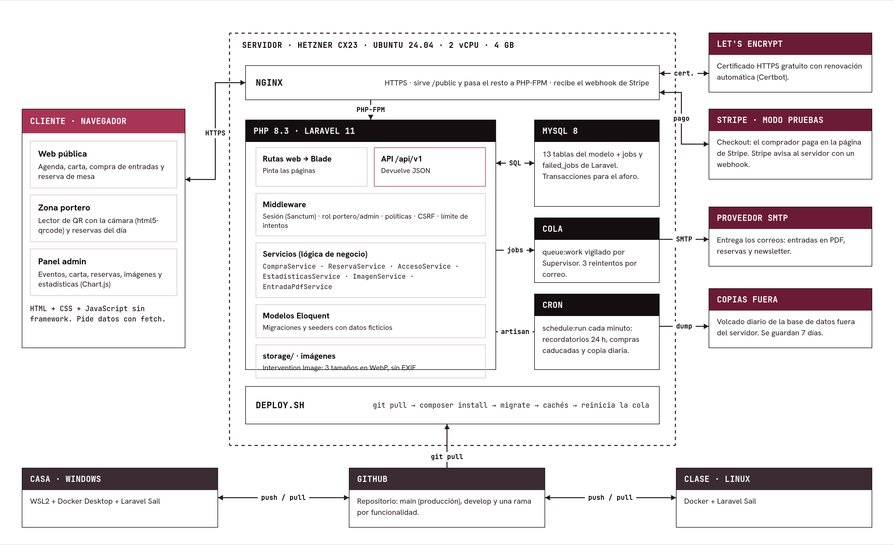

Magenta: diseño del sistema
1Condiciones de la Propuesta
La Propuesta se aprobó sin condiciones ni correcciones. El alcance que se evalúa es el aprobado.
Al diseñar se han concretado cuatro puntos. Ninguno amplía el alcance:
- Entradas solo por correo. La Propuesta decía «por correo y en un enlace único». Se quita el enlace: las entradas llegan en un PDF con un QR por entrada y no se pueden consultar en la web. Hay menos superficie para filtrar datos.
- Código de 12 caracteres. Cada entrada lleva bajo el QR un código como 7K2Q-D9XA-M3PF, para que el portero pueda escribirlo si falla la cámara.
- Inglés solo en la interfaz. Se traducen los textos fijos de la web pública; los eventos y la carta se escriben una vez, en español. La traducción pasa de la entrega 5 a la 4, que pide la interfaz acabada.
- Plan B en PDF. La lista de entradas de la noche se descarga en PDF antes de abrir, como prevé el apartado «Qué pasa si falla».
2Modelo de datos
13 tablas en MySQL 8, en notación pata de gallo. Todas usan id INT autoincremental. PK clave primaria · FK clave ajena · UQ valor único · NULL el campo puede quedar vacío. Cabecera magenta: agenda y entradas; granate: reservas y carta; negra: personal y sistema.

Por qué está organizado así
Sin tabla de clientes. El público no tiene cuenta: los datos de quien compra se guardan en compras. Se guarda lo mínimo, sin DNI, y se puede borrar compra a compra (RGPD).
Una fila por entrada. Cada persona tiene su propio codigo_qr, que el portero valida una sola vez. Las entradas no son nominativas.
Compra, línea y entrada. Una compra puede mezclar tipos. lineas_compra copia el precio_unidad, así las compras antiguas no cambian si sube el precio.
Stock sin duplicar. tipos_entrada.stock es el total; las disponibles se calculan restando las vendidas, dentro de una transacción, para no superar el aforo.
Estados en lugar de borrar. Eventos, compras, entradas y reservas cambian de estado. No se pierden datos para estadísticas ni contabilidad.
Solo el personal en usuarios. Dos roles. validada_por guarda qué portero escaneó cada entrada y gestionada_por quién aceptó cada reserva.
Aviso a suscriptores una vez. eventos.avisado_en guarda cuándo se avisó; con fecha, el botón ya no aparece.
Correos registrados. notificaciones apunta a una compra, a una reserva o a ninguna (newsletter), con estado e intentos.
Imágenes en una tabla. Carteles y fotos de la carta apuntan a imagenes. Los tres tamaños comparten nombre con sufijo.
Fuera de la base de datos. El horario va fijo en la configuración y el inglés solo traduce la interfaz: no hay tabla de horarios ni campos _en. Las estadísticas se calculan con consultas.
Valores ENUM
| {{ e.f }} | {{ e.v }} |
3Arquitectura
Laravel 11 pinta las páginas y sirve la API en el mismo servidor. El navegador pide los datos con fetch. Todo corre en un VPS Hetzner CX23 con Ubuntu 24.04.

Tecnología por capa y por qué
| Capa | Tecnología | Por qué |
|---|---|---|
| {{ t.layer }} | {{ t.tech }} | {{ t.why }} |
Despliegue
Hetzner CX23 (2 vCPU, 4 GB, unos 6 € al mes, centro de datos en la UE). Nginx, PHP-FPM, MySQL, Supervisor para la cola y cron en la misma máquina. HTTPS con Let's Encrypt. Un script deploy.sh hace git pull, composer install, migraciones, cachés y reinicia la cola. Copia diaria de la base de datos fuera del servidor, 7 días.
Entornos de desarrollo
Docker con Laravel Sail en casa (Windows con WSL2) y en clase (Linux), con las mismas versiones que producción. El código se sincroniza con GitHub; los datos no se copian, se crean con migraciones y seeders ficticios. El .env no se sube: cada entorno tiene el suyo a partir de .env.example.
4Roles y permisos
Tres perfiles; solo dos inician sesión. Los permisos se comprueban en el servidor con middleware de rol y políticas de Laravel; sin permiso, la API responde 401 o 403.
| Acción | Visitante | Portero | Admin | Nota |
|---|---|---|---|---|
| {{ r.label }} | {{ r.v }} | {{ r.p }} | {{ r.a }} | {{ r.note }} |
Por qué no sobra ninguno. El visitante compra y reserva sin cuenta. El portero solo entra a la zona de puerta: si alguien le quita el móvil, no puede tocar eventos, carta, reservas ni personal. El admin gestiona el negocio y también puede validar si falta el portero. El admin no puede desactivarse a sí mismo, así siempre queda al menos uno.
5La API
REST en JSON con prefijo /api/v1, documentada con Scribe. Sesión con Sanctum por cookie y CSRF, porque web y API están en el mismo dominio. Límite de 10 peticiones por minuto en compras, reservas, newsletter, inicio de sesión y validación de QR. Las rutas de portero y admin responden 401 sin sesión y 403 con un rol sin permiso; no se repite en la tabla.
| Método | Ruta | Qué hace | Rol | Respuestas |
|---|---|---|---|---|
| {{ r.m }} | {{ r.path }} | {{ r.what }} | {{ r.role }} | {{ r.codes }} |
Códigos. 200 correcto · 201 creado · 202 aceptado, se procesa en la cola · 204 sin contenido · 400 firma de Stripe incorrecta · 401 sin sesión · 403 rol sin permiso · 404 no existe · 409 conflicto (sin stock, entrada ya usada, evento ya avisado, imagen en uso) · 422 datos no válidos, con el error de cada campo · 429 demasiadas peticiones.
6Prototipos de pantalla
Todas las pantallas están hechas en HTML, CSS y JavaScript con el sistema de diseño propio de Magenta, y se pueden abrir en el repositorio. Cada una se muestra en escritorio (1280 px) y en móvil (390 px). Los datos son ficticios.
Criterios de accesibilidad (WCAG 2.2 AA)
{{ x.t }} {{ x.d }}
{{ s.n }}{{ s.title }}
{{ s.file }}{{ s.desc }}
7Las tres piezas de ampliación
| Pieza | Modelo de datos | API | Pantallas |
|---|---|---|---|
| {{ a.name }} {{ a.why }} |
{{ a.db }} | {{ a.api }} | {{ a.ui }} |
8Calendario
Unas 10 horas por semana, 24 semanas: unas 240 horas hasta el 14 de mayo. Las semanas de vacaciones llevan menos carga y sirven de margen para retrasos.
| Sem. | Lunes | Qué tendré hecho |
|---|---|---|
| {{ c.n }} | {{ c.d }} | {{ c.t }} |
Qué tendré en cada entrega
Base de datos con datos ficticios, inicio de sesión con roles, API pública de agenda y carta, y altas, bajas y modificaciones de eventos, tipos de entrada, carta y personal en el panel.
Compra con Stripe en pruebas, entradas en PDF con QR por correo, lector de QR, reservas, lista del plan B, newsletter, textos legales, inglés e interfaz acabada y adaptada a móvil.
Las tres ampliaciones terminadas, la web en el VPS con HTTPS, copias de seguridad probadas y el plan de pruebas ejecutado con su registro de correcciones.
9El repositorio
- Contenido subido: los prototipos de todas las pantallas, el sistema de diseño, los diagramas, la Propuesta, este documento y el CHANGELOG con cada cambio.
- Ramas:
maines producción,developintegra el trabajo y cada funcionalidad va en su propia rama, que se une adevelopal terminarla. - Commits: mensajes con prefijo (
feat:,fix:,docs:). El.envcon las claves no se sube nunca.
10Uso de IA
He usado Claude (Anthropic), en su versión de chat, en estas partes:
- Prototipos de pantalla: generar el HTML, CSS y JavaScript de las pantallas y del sistema de diseño a partir de mis indicaciones, y probar varias versiones visuales (v1 a v4) hasta elegir la v2.
- Diseño técnico: comparar alternativas para el modelo de datos, la arquitectura, el pago, la cola de correo, el lector de QR y el VPS. Las decisiones las he tomado yo; por ejemplo, quitar los packs de entradas, no permitir devoluciones, mandar las entradas solo por correo y elegir Hetzner.
- Documentación: redactar y maquetar la Propuesta, este documento, los diagramas, el CHANGELOG y la guía de Git, a partir de lo que habíamos decidido.
Todavía no hay código del proyecto. Todo lo generado lo he revisado y lo sé explicar. Si en la programación uso alguna herramienta de IA, lo indicaré en la entrega correspondiente.